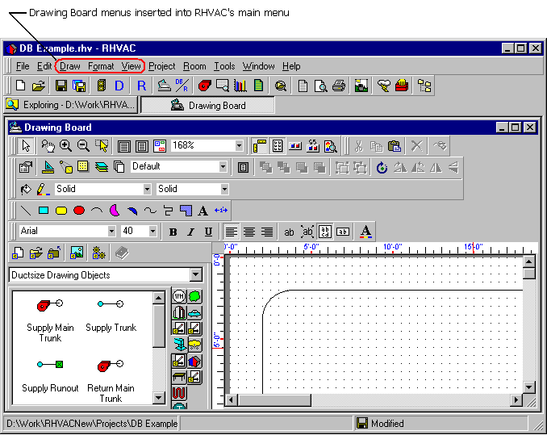

Copying a Template (Tutorial Step 2) |
  
|
Copying a Template (Tutorial Step 2) |
|
1.Now that the project is in Drawing Board mode, click the Project menu and select "Drawing Board." The New Drawing dialog appears.
2.On the Templates tab of the New Drawing dialog, select the icon for the template, "8.5 x 11 Eighth Scale with Border.dtp" and click OK. The Drawing Board window appears with a copy of the selected template loaded into the drawing window, as shown below: Notice also that Rhvac's main menu has been modified to include three extra main menu items that are specific to the Drawing Board window: Draw, Formatand View. The Edit menu has also been modified to include selections appropriate for Drawing Board.
